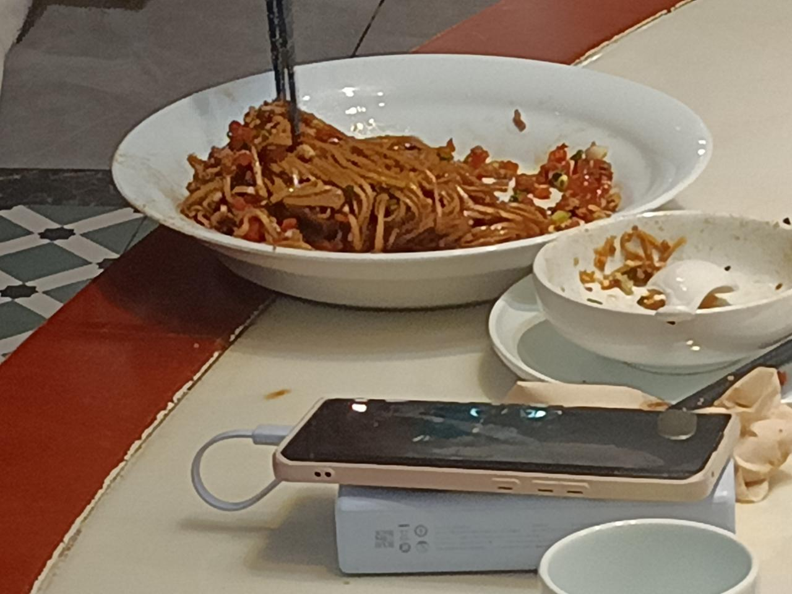
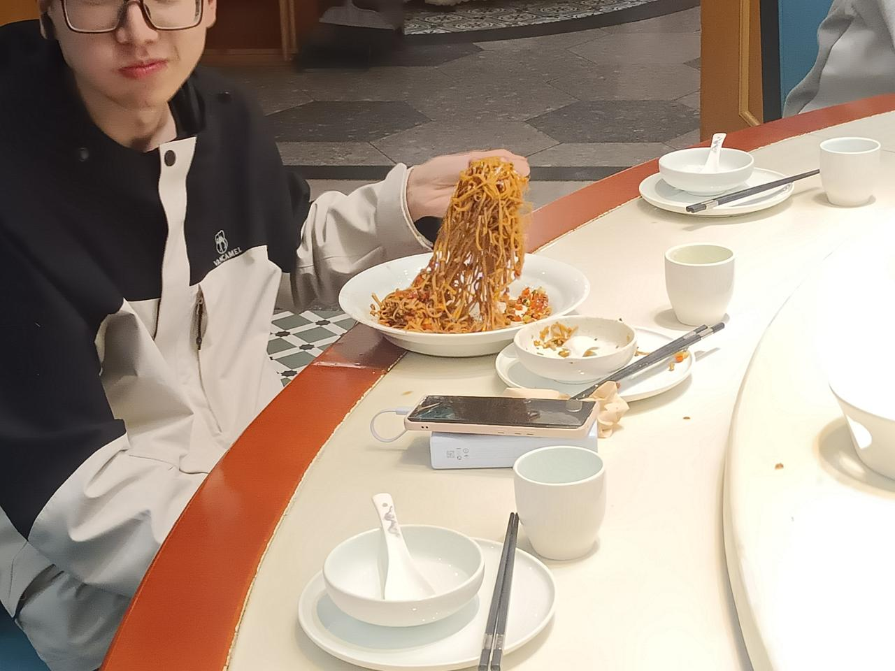

科技展活动结束后，大家相约聚餐。
邬正东同志因为一些原因，姗姗来迟，这就导致他来的时候，菜已经快没了（不是没想过留一些菜，是因为大伙真的饿了，私密马赛），只有一道“有味的拌面”量比较多，所以当时大家都说，让正东来了吃“有味的拌面”
但是大家实在是饿啊，连这个量大的“有味的拌面”都吃完了，所以给正东又上了几道菜
“正东好哪一口啊？”
“不知道啊”😵💫😵💫🧐🧐
新加了几道菜，注意，此刻真正的主角依然在菜单上
当这道菜在挑选它的主人时，大家开玩笑说“让正东吃”（此时还剩不少）
正东：“可以啊”（把盘子端了下去）
然后......邬同志真的把一整盘都解决了
您是真的饿了，还是就好这一口😵💫😵💫🤔🤔


小编补充：这盘前面已经吃了的部分的大部分也是邬同志解决的（），并且还点了其他几道菜（）